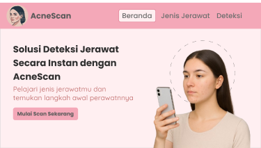

ACNEVERSE: Artificial Intelligence-Based Acne Detection and Skin Care Education System

7
Acne Classes
YOLOv8
Detection Model
Web App
Cross Platform
Situation (Project Background & Context)
Facial skin health issues, particularly acne, often lead to a decrease in self-confidence for many individuals. Unfortunately, limited access, high clinical consultation costs, and a lack of basic knowledge frequently cause people to misidentify their type of acne and choose inappropriate treatments. The ACNEVERSE project was initiated as a capstone project within the prestigious DBS Foundation Coding Camp powered by Dicoding program to provide an accessible, fast, and educational early detection solution for skin conditions.

Task (Challenges & Team Responsibilities)
As the development team, we were fully responsible for designing, training, and implementing an artificial intelligence model capable of precisely classifying multi-class acne. The main challenge was to train the Computer Vision model to be sensitive enough to detect various sizes and types of acne directly from the user's camera. Throughout the development process, our team received intensive mentoring from professional mentors in the fields of Artificial Intelligence, Machine Learning, Computer Vision, and Software Engineering to ensure the system standardization met industry expectations.
Action (Technical Implementation & System Architecture)
To build a robust, responsive, and flexible platform, we developed this system by separating the user interface from the intelligent computing components (Decoupled Architecture) through the following strategic steps:
1. Computer Vision Model Development (Deep Learning)
We trained the YOLOv8 model using a curated and manually annotated dataset of facial images. This model was specifically optimized to accurately recognize and separate 7 skin condition categories through the placement of bounding boxes and confidence scores:
- Blackheads and Whiteheads
- Papules and Pustules
- Nodules
- Acne Scars and Pores
2. Full-Stack Integration & API Service Creation
- FastAPI Backend Service: Acts as the core AI engine powered by Python and OpenCV, responsible for receiving image payloads, performing real-time YOLOv8 model inference, and returning coordinate data along with prediction labels.
- Laravel Frontend Web: Utilized to design the user interface, authentication system, and program navigation logic using PHP and a MySQL database.
- REST API Connectivity: Bridges the asynchronous communication between the Laravel gateway and the FastAPI cluster to ensure the image calculation process runs seamlessly.
3. User-Oriented Feature Engineering
We designed a simple and user-friendly workflow for the application (Cross-Platform Mobile & Desktop Browser):
- Users open the ACNEVERSE application via a browser, then choose the input option via gallery file upload or real-time camera capture.
- The image is sent to the server via the REST API to be executed by YOLOv8.
- The system returns a visualization of the acne positions, complete with detailed triggering characteristics, causes education, and relevant skincare solution recommendations.

Result (Final Outcome & Impact)
Through solid team collaboration and regular guidance, the ACNEVERSE project was successfully completed and seamlessly presented to the mentors and evaluation board of the DBS Foundation Coding Camp program. The system proved capable of instantly detecting the location and classifying the type of acne with a satisfying level of accuracy. The successful integration of YOLOv8, FastAPI, and Laravel technologies brought forth a disruptive health technology product that is not only functional as a facial scanning tool but also highly successful as an interactive educational medium to increase public awareness of skincare on a broader scale.